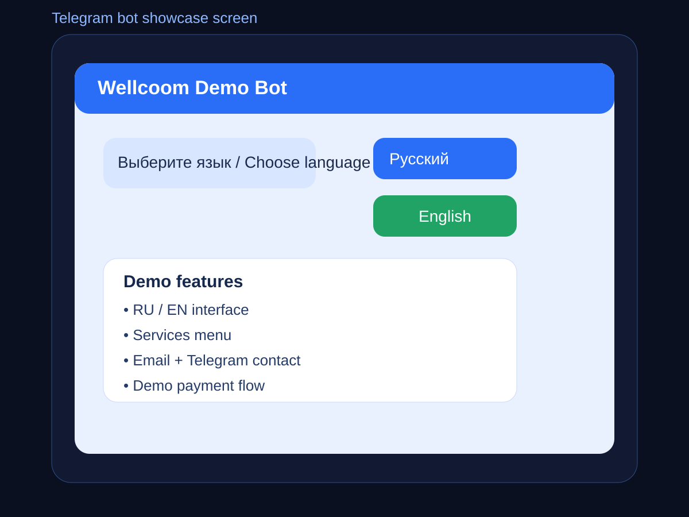
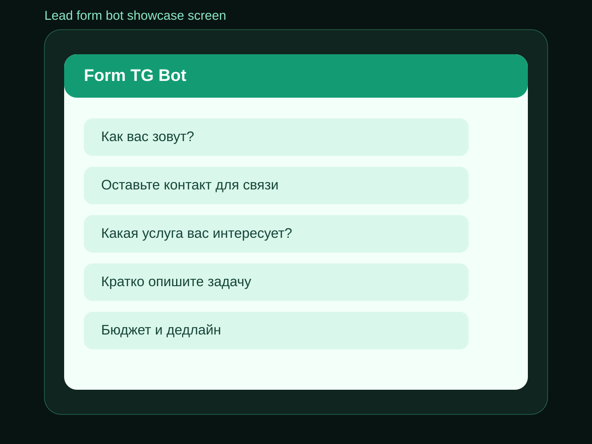

Telegram-боты как продающий лендинг
Это демонстрация первого дизайнерского подхода: страница оформлена как полноценный лендинг с hero-блоком, преимуществами, pricing, портфолио и call-to-action. Она показывает, как можно упаковать услугу разработки Telegram-ботов в более коммерческий формат.
Что демонстрирует эта страница
- лендинговую структуру под услугу
- коммерческую подачу оффера
- связку текстов, demo-репо и визуалов
- подход, в котором страница не просто описывает услугу, а продаёт её
Почему такой формат работает
Когда клиент видит Telegram-ботов не как сухую техническую услугу, а как готовое решение для бизнеса, конверсия в интерес и диалог выше. Лендинг помогает показать выгоду, сценарии применения и доверительные материалы в одной структуре.
Понятный оффер
Сразу видно, что бот может помочь с заявками, коммуникацией, продажами и автоматизацией.
Наглядные примеры
На странице есть demo-репозитории и визуальные превью двух реализованных примеров.
Коммерческая логика
Страница выстроена как витрина услуги: выгода, кейсы, pricing и call-to-action.
Пакеты и формат работы
Ниже пример того, как pricing может выглядеть на лендинге — это уже ближе к реальному коммерческому предложению, чем обычная карточка услуги.
Базовый
Простой Telegram-бот с меню, командами и базовым сценарием под точечную задачу.
Стандарт
Бот для заявок, форм, уведомлений и рабочих бизнес-сценариев с продуманной логикой.
Премиум
Кастомный бот с интеграциями, API, CRM и заделом под дальнейшее развитие продукта.
Портфолио и demo-примеры
Здесь собраны уже не абстрактные формулировки, а конкретные демонстрационные материалы: код, repo и визуальные превью. Это усиливает доверие и показывает, что услуга может быть реализована в разных сценариях.
Demo bot 1 — связь и demo-оплата
RU/EN интерфейс, список услуг, контакты через email и Telegram, demo payment flow.

Demo bot 2 — форма заявки
Пошаговая форма с полями: имя, контакт, услуга, задача, бюджет и дедлайн. Demo-уведомление менеджеру.

Итог: это уже не просто страница услуги, а landing-демонстрация
Такой формат хорошо показывает, что одна и та же услуга может быть упакована в более продающий дизайн. Это важно для портфолио: клиент видит не только техническую экспертизу, но и гибкость в презентации.